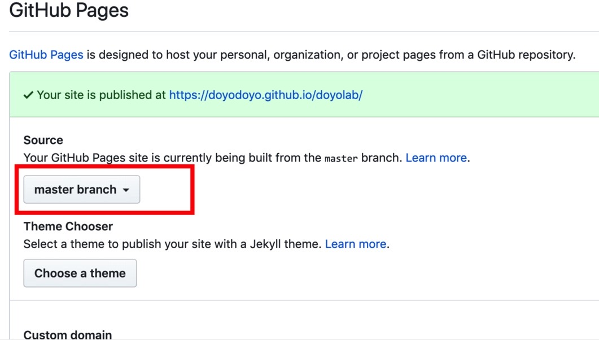

gitの初期設定
＜git用のフォルダの作成＞
ターミナルを立ち上げ、git用のフォルダを作流ために、フォルダ名を自分で決め（なんでもいい）、ホームディレクトリにフォルダ名を入力しフォルダを作る。立ち上げたターミナルにmake directoryの略である、 mkdir と入力するとフォルダが作成される。
＜gitの設定＞
・gitの初期設定を行うために、 git init と入力する。
・次に、 git config --global user.email "自分のメールアドレス"と入力し、enterを押す。
・次に、 git config --global user.name "自分の名前(アルファベット)"と入力し、enterを押す。
githubの設定
＜まずはアカウントを作成する＞
GitHubのページでGitHubのアカウントを作る。この時、アカウント名、メールアドレス、パスワードは忘れないようにしておくべき。
＜リポジトリーの作成＞

・githubの右上にある+マークをクリックし、New Repositoryをクリックし、新しいリポジトリーを作る。
下記の画像を参考にリポジトリーを作成する。赤枠のチェッックを入れた後に「Create Repository」を押す。
・リポジトリーのSettingsから下記の設定をする。 ここで表示されているhttps://ユーザー名.github.io/doyolab/ がホームページになる。

アクセストークンを作成
任意のページの右上で、プロフィール画像をクリックし、続いてSettings（設定）をクリックし,左サイドバーで [Developer settings] をクリック。左のサイドバーでPersonal access tokens（個人アクセストークン）をクリックし、[Generate new token] をクリックする。その後トークンにわかりやすい名前をつけるところまでが、大まかな流れだ。ここで一番重要なのが、この時に表示されるアクセストークンは一度しかみる事ができないため、必ず保存しておく事。
さらに詳細は、ここを参考にしてみるといい。リポジトリーを自分のPCにクローンするには？
gitのURLをコピーし、ターミナルで、cd mygitを入力し mygit をフォルダに移動。そして、ターミナルで git clone リポジトリのURL を入力し、GitHubリポジトリのクローンを作成する。ここでは、mygitの中にdoyolabというフォルダができて、doyolabフォルダの中にREADME.mdファイルが入っていれば成功だ。
公開方法
VSコードをセーブし、以下の手順を行う。 cd mygit/doyolab （既に移動済みの場合は不可） git add . git commit -m "メッセージ" （ここを日付など区別ができるもので行う） git push これらが終えたら、自分のページを確認し、表示されていたら完成。